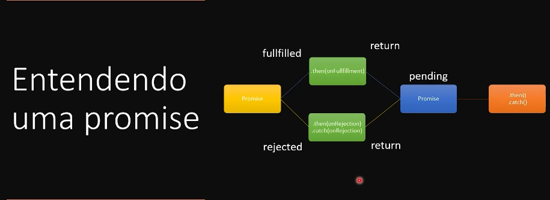

JavaScript avançado
Filter
Material de apoio
O filter é uma função que aceita outra função como parâmetro, e ela vai ser usada para filtrar. Imagine que voce tem um aray com objeto de pessoas de varias idades e queira filtrar somente as de 33 anos, seria possível fazer com laço for.
let pessoasComIdadeDe33anos = []
for(let i = 0; i < pessoas.length; i++){
if(pessoas[i].idade === 33){
pessoasComIdadeDe33anos.push(pessoas[i])
}
}
Usando o método filter fica mais fácil, como ele é um callback não será preciso criar a variável i, percorrer o array por que ele faz isso tudo sozinho, e ele gera um novo array com os valores com um número menor de elementos.
Exercício exemplo filter
Exercício apenas filter
Como no exercício é só usar o callback, usar o pessoas como parâmetro e retornar os que tem valor = a 33. Se esse filter for feito dentro de uma variável ela já irá guardar o resultado.
Map
Material de apoio
O map parece com o filter mas é usado para transformar o array em um array totalmente novo com o mesmo número de elementos. É como uma cópia desse elemento.
let NomeDasPessoas = []
for{let 1 = 0; 1 < pessoas.lenght; 1++}{
nomeDasPessoas.push(pessoas[i].nome)
}
Dessa forma seria a maneira de se fazer com o for, mas ela é muito mais verbosa do que usar o map, adicionando o nome das pessoas a ultima posição do array a medida que o index aumenta.
Exercício Map
Usando o map ele vai receber uma função como parâmetro e essa função pode-se usar o objeto percorrido como parâmetro dela. Essa função deverá retornar o resultado a variavel a qual está sendo atribuida o map, é interessante para iterar sobre objetos em um array, ou concatenar os valores desse objeto. Ele recomendou usar mais o map() que o forEach() para iterar sobre um array.
Reduce
Material de referência.
Digamos que nas ordens de compras da bolsa de valores que ficam armazenadas dentro de uma array, contem objetos com o tipo, valor e etc. Para acessar esses valores da ordem usando o for ficaria assim:
let quantidadeDeOrdens = 0
for(let i = 0; i < ordens.length; i++){
quantidadeDeOrdens += ordens[i].quantidade
}
È preciso iterar sobre o array e selecionar a propriedade dela pelo indice e propriedade.
Exercício reduce
Já usando reduce é parecido com o map retornando um novo array, mas é possível colocar qual é o index inicial ao seu fim.
Existem 2 parâmetros para o map, o objeto que irá receber, e o objeto que será iterado, confira o exercício
Para fazer a iteração e atribuir o valor com uma variável com for, é preciso colocar o sinal += pois se não será substituida, mas no reduce, já que ele cria um array é apenas colocar o + que não irá substituir os valores de dentro.
Interpolação de string
Antes do es6 não existia a interpolação, fazendo com que para concatenar é preciso interromper a string e colocar um + para inserir outros valores.
Exercício interpolação de string
Agora é possível colocar o texto com a variavel sem usar o +, apenas colocando a variável dentro de um cifrão com chaves na frente e a expreção dentro de crases. Também seria possivel chamar função dentro das crases
Desustruturação de objetos e arrays
Material de apoio
Permite extrair variáveis de objetos ou arrays. Na declaração já mapeie as propriedades do objeto para essas variáveis.
Exercício desestruturação
let pessoa = {nome: 'Roberto', sobrenome: 'Dias', idade: 33 }
let nome = pessoa.nome
let idade = pessoa.idade
console.log(nome)
console.log(idade)
essa é a forma que tem sido usada para expressar um objeto, mas com a desestruturação ficará um pouco mais prático.
let {nome: nome, idade:idade} = pessoa
Fazendo dessa forma já informo o javascript que estou fazendo uma desestruturação para o objeto pessoa. E caso eu queira dar um console.log() na propriedade escolhida é só usar o nome da propriedade como nome da variável.
Como está usando o mesmo nome da propriedade com o nome da variavel é possível omitir o nome da propriedade.
Já na desestruturação de array diferente do objeto que usa chaves será preciso usar o array e atribuir com o array. Na desestruturação do array é baseada no indice do array, não vai funcionar os : da propriedade.
Spread
Material de apoio
Com o spread é possível expandir os elementos de um objeto iteravel, são objetos que podem ser precorridos.
const pessoas = ['Roberto', 'Ricardo', 'Raphael']
console.log(pessoas)
console.log(...pessoas)
Ele irá retornar o array com os itens separadamente.
Antigamente para unir dois arrays é preciso usar o metodo concat(), hoje é só usar o spread dentro de um array novo e colocar junto com os arrays que será preciso concatenar. E ele também serve para clonar um objeto
Exercício spread
REST
O parâmetro rest permite passar um número indefinido de arumentos que se passa para uma função. Bem parecido com o spread, ele é uma forma de permitir passar um array não declarado como parâmetro para um função. Se eu quiser criar uma lista de nomes e esses nomes serem passados dentro de uma mesma mensagem, é possível usar o REST para mandar essa mensagem por parâmetro um um calback como map ou ForEach.
function incentivarQuesters(mensagem, ...nomeQuesters){
nomeQuesters.map( nomeQuester => console.log(`${mensagem} ${nomeQuester}`))
}
incentivarQuesters('Parabéns por ter chego ao módulo de JavaScript avançado', 'Joao', 'Pedro', 'Rafael')
Exercício rest
O Rest só pode ser passado como últmo parâmetro.
Set time out ou settimeInterval
Ambas são callbacks e são funções assincronas, o settimeout executa um código depois de um periodo de tempo, e o interval em um determinado intervalo de tempo.
setTimeOut(function(){
}, 3000)
O tempo é passado em milisegundos e não segundos, este será o segundo parâmetro da função, e essa função é uma função assincrona.
Exercício setTimeOut e Interval
No caso do setTimeInterval(), será executada várias vezes de acordo com o intervalo que for determinado.
Para parar e colocar uma interrupção no intervalo é preciso atribuir essa função a uma variável, e usar o método clearInterval() ou clearTimeOut().
Assincronismo
Material de apoio Sincronismo e assincronismo
O javascript é uma linguagem sincrona, tem uma dependência de execução de uma linha para outra. já funções assincronas são executadas independente da ordem de execução pois elas não dependem da linha de cima e da linha de baixo.
Fazer um café pode ser feito de duas manairas, colocar um café para ferver agua e esperar ela ser fervida, ou fazer as outras tarefas enquanto a agua está sendo fervida. Uma forma é assincrona, e outra é sincrona.
Exercício assincronismo
Promisses
Material de apoio Promisses.
Promisses são uma maneira um pouco mais nova de se trabalhar com assicronissidade no javascript de forma legivel e gerenciavel, facilita o tratamento de exessões.Representam um valor que pode ou não estar disponível no futuro.
As promisses também solucionam o problema do callback hell.
Existem 4 estados para as promisses:
- Pendente: criada e não executada
- Realizada: quando teve sucesso na execução (resolve)
- Recusada: teve falha na execução (reject)
- Estabelecida
Pendente é o estado inicial de toda promisse e a gente que define se ela foi realizada ou recusada. Para criar uma promisse:
new Promise((resolve, reject) =>{
})
A promisse é uma classe no JavaScript, e se escreve com a primeira letra maiuscula, é um callback.
O resolve e o reject são uma função, o resolve é chamado para mudar o estado da promisse para realizada, e o reject para quando estiver recusada.
Exercício Promisses
let ferverAgua = function(chaleiraNoFogao, fogaoLigado){
return new Promise ((resolve, reject) => {
if(chaleiraNoFogao && fogaoLigado){
console.log('começando o processo de ferver a água.')
resolve()
}else{
console.log("è necessário ligar o fogao e colocar agua na chaleira.")
reject()
}
})
}
Não é preciso ter um return para cada um dos fluxos, o return pode retornar o resultado da promisse.
Quando a promisse der erro, ele precisa ser tratado para que não dê erro no terminal, toda vez que é retornado o resolve ou reject elas são a mudança de estado.
Entendendo a promisse
Material de referência promisse all.settled()
Material de referência promisse.all
Existirão 2 possiveis estados da promisse

Uma promisse pode ser como comer pizza em uma pizzaria, com a analogia semelhante ao assincronismo. Se der tudo certo retorna um valor se não retorna outro.

Promisse.all()
Se quiser que todas as pizzas chegem ao mesmo tempo poderia usar esse metodo, mas se uma falhar não retorna nenhuma.
const x = Promisse.all([p1, p2, p3])
O promisse.all tem um array, se precisar do valor das 3 promisses se usa o promisse.all, mas se precisar de ao menos uma, utiliza o .allSettle(), e caso não tenha nenhuma promisse retorna null.
Completar essa parte com a aula complementar